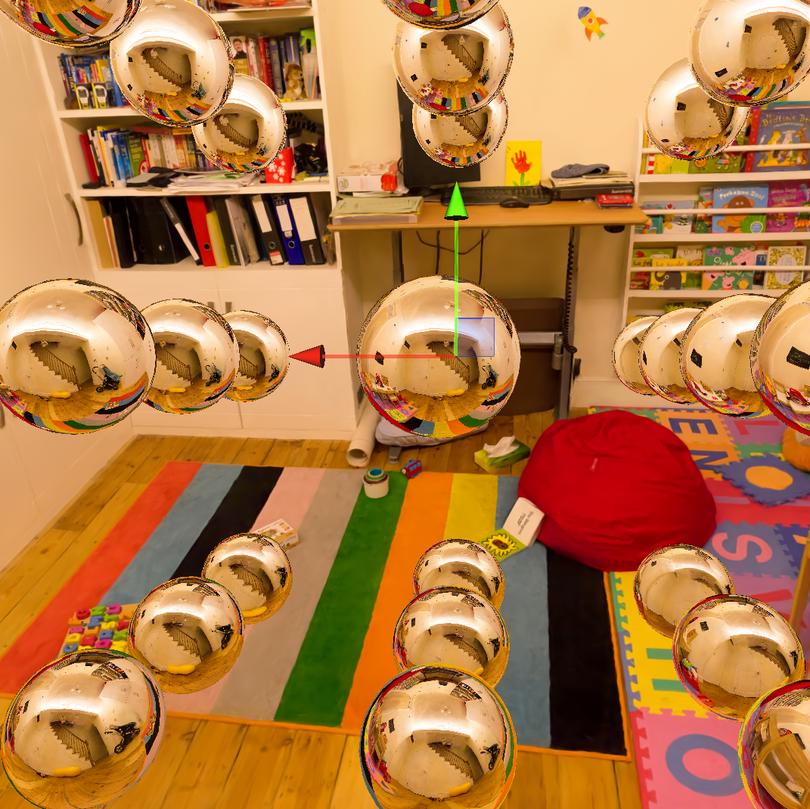
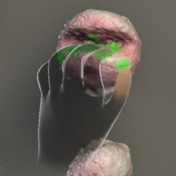
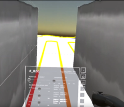
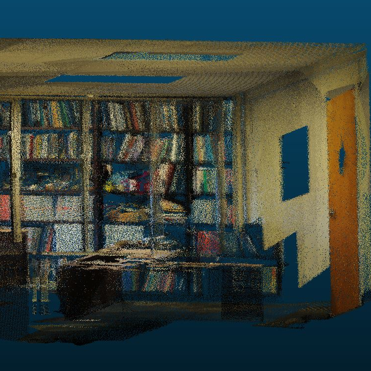

A tool to bake reflection probes from 3D Gaussian splatting scenes to relight meshes in Unity.
Doing this, we learned that EWA splatting is not accurate enough to render cubemaps.
The approximation causes artifacts to appear at the seams where the cube faces meet.
Instead, we raytraced the Gaussian primitives.
Unity can then use the baked cubemaps to relight meshes in real time by interpolating between nearby probes.

An XR rock climbing app for kinesthetic rehearsal.
If you climb, chances are you've stood at the base of a hard route and mimed the moves.
But what if you could actually see the holds in front of you without climbing up to them?
We scanned a MoonBoard and put it in AR/VR with a
custom shader that lights up where your fingers and palms touch.
So, you can practice your exact hand and body positions on the ground with metric accuracy
and live feedback.
We were awarded a grant from the
Columbia-Dream Sports AI Innovation Center
to significantly expand this project. Stay tuned!
Discharge promotes melt and formation of submarine ice-shelf channels
at the Beardmore Glacier grounding zone and basal body formation downstream
Andrew Hoffman,
S. Isabel Cordero,
Qazi Ashikin,
Joel Salzman,
Kirsty Tinto,
Jonathan Kingslake,
David Felton Porter,
Renata Constantino,
Alexandra Boghosian,
Knut A. Christianson,
Howard Conway,
Michelle R. Koutnik
AGU Fall 2024
Augmented Reality and Virtual Reality for Ice-Sheet Data Analysis
Alexandra Boghosian,
S. Isabel Cordero,
Carmine Elvezio,
Sofia Sanchez-Zarate,
Ben Yang,
Shengyue Guo,
Qazi Ashikin,
Joel Salzman,
Kirsty Tinto,
Steven Feiner,
Robin Elizabeth Bell
IGARSS 2023

An XR glaciology app.
We visualize radar data in an immersive 3D environment and develop custom UX tools for scientists.
Using a Quest or Hololens VR/AR headset, users can manipulate radargrams and other
scientific data to study glaciological processes in Antarctica and Greenland.
I created the pipeline that ingests radar plots and generates 3D meshes that visualize
the actual locations from where the signals were gathered.
We believe we were the first to model the entire flight trajectory in 3D.

We used PointNet and PointNet++ to segment and classify LIDAR point clouds of indoor environments at various levels of detail.
Since this was my first foray into research (hooray!), I manually classified the ground truth and created visualizations.

{kind=link}